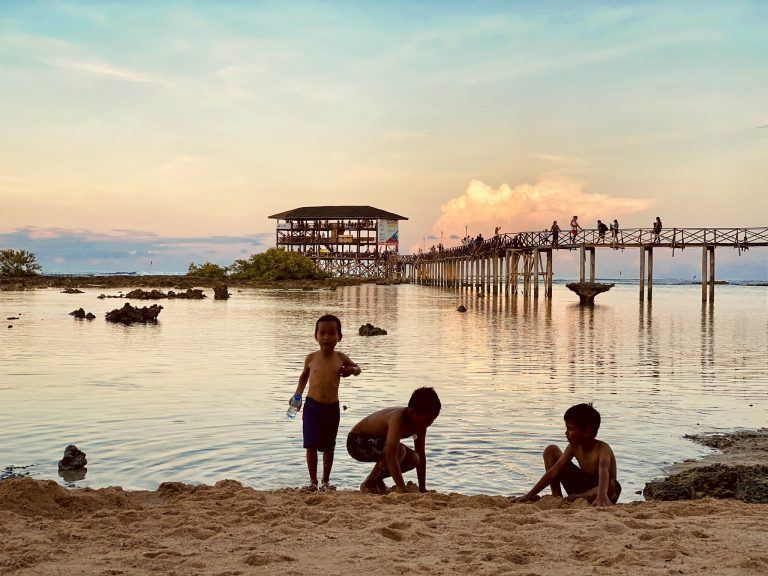
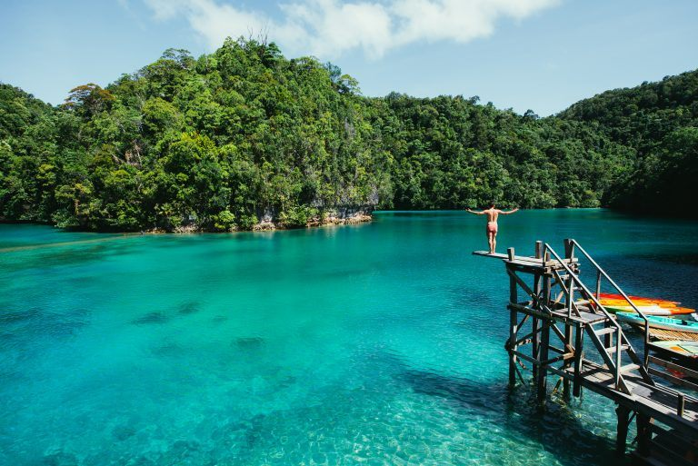
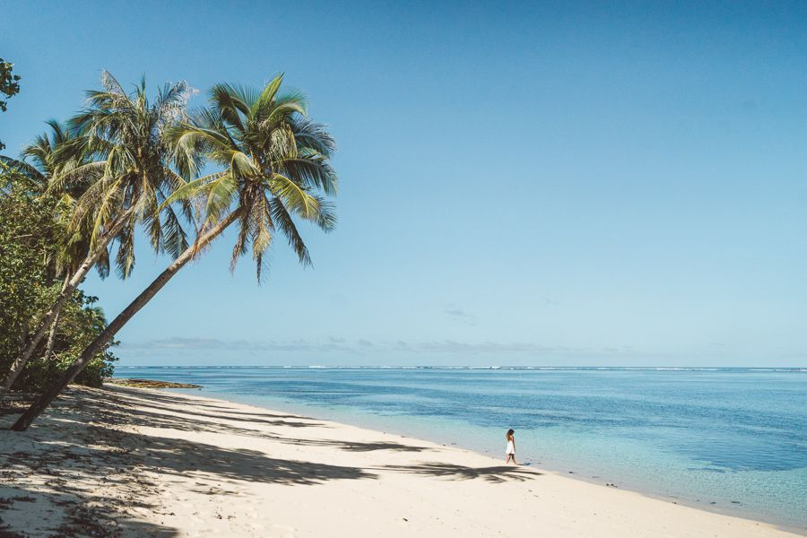
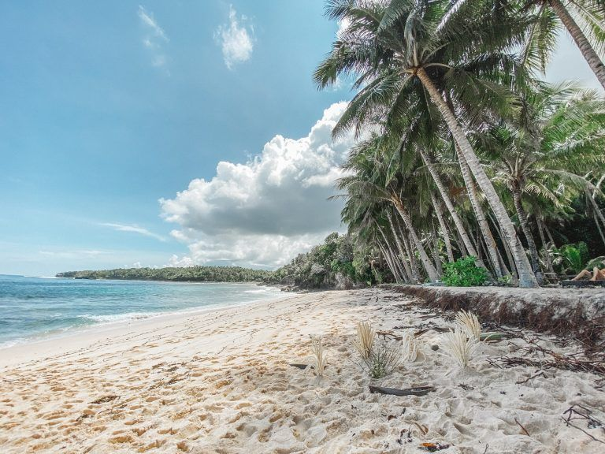

Siargao Itinerary:
Ultimate Travel Guide
The Philippines is full of very touristy destinations like Boracay and El Nido, but emerging beach havens like Siargao deserve special mention as well. If you are planning a trip to the Philippines but don’t want the typical tourist experience, you must visit Siargao. It has been Confused about what to do there? Well, here is a list of best places to visit when in Siargao.


The Philippines is full of very touristy destinations like Boracay and El Nido, but emerging beach havens like Siargao deserve special mention as well. If you are planning a trip to the Philippines but don’t want the typical tourist experience, you must visit Siargao. It has been Confused about what to do there? Well, here is a list of best places to visit when in Siargao.
Traveling – it leaves you speechless,
then turns you into a storyteller
- Cloud 9 Pier Sunrise or Sunset
- Magpupungko Tidal Pools
- Tayangban Cave Pool
- Sugba Lagoon
- Tak-Tak waterfall
- Alegria Beach
- Pacifico Beach
- Secret or Guyan Beach
- Sunset at Secret Mangrove Wharf
- Corregidor Island
If you are looking for a great start to your day, get on to the Cloud 9 Pier for an amazing sunrise. It is great for sunsets too, but usually quite crowded and you have to see the sunset from the viewing hut, which is actually not the best place for seeing into the horizon. You will also end up sharing it with too many people – not a great idea either. Not many people head to the pier for a sunrise, so it is quite relaxed. This is the perfect way to start a day full of adventure and excitement. It is also one of the best surfing spots in Asia, and full of excellent surf resorts.

One of the most popular attractions on Siargao Island, the pools are just 45 minutes away from the city centre of General Luna. The pools are exposed at low tide. You can spend a good half day exploring the pools, taking a dip and cliff jumping.
There are coves and caves and the bluest of waters leave the onlooker speechless! The only two things which need to be checked before you leave for the pools are: Wear water shoes or normal shoes because of the jagged rocks, and arrive at the low tide by checking tidal timings beforehand, as they change daily. At the right tide, the place is magical to say the least!

Tayangban Cave Pool is the most mystical of the places to visit on Siargao. The dark but shallow rivulet is covered by cave systems which go into the mountain as tunnels. One needs to carry torches to wade through and bats might come swooping in, so one needs to be careful. At the end of the tunnels is an open cave pool which is ideal for cliff jumping. An adventurous and very cool spot to visit, the Tayangban Cave Pool is a must visit in the area.

Sugba Lagoon is a very popular place to go in Siargao. It is pristine and spectacular. One can reach this amazing natural beauty spot which lies in the middle of mountains. It is a short, day-trip from General Luna, where one can reach on boat. One can also visit this place from Del Carmen on boat.
There are many options to enjoy this place –hanging out in the main lagoon area to enjoy rental rafts, diving boards, swimming in the lagoon and relaxing at the cafes in the region and also move to quieter places to take pictures and generally relax. Visiting Sugba Lagoon is often combined with Magpupungko Tidal Pools in a single trip, although if you choose to do so it’s probably better to book a packaged tour and not try to do it yourself.
Visit this waterfall driving to the north side of the island, about an hour and a half on the road from General Luna. It is an adventure junkie’s treasure, with ample opportunities for cliff jumping and tree jumping and walking up to the top of the falls. This is the only waterfall in Siargao and though it is far from the city centre but totally worth it, for there are very few people and lot of chance to bond with nature!

This is a very picturesque beach, about an hour’s drive from the main city centre. The drive becomes worth it for the brilliant white sands and low number of tourists on the beach. The glimmering sand and the lapis water is straight out of a photographer’s dream! The water is calm, but the reefs are many. In general, the beaches on Siargao are full of reef and it is impossible to stand on the jagged ocean floor but here, a few spots make it possible. It is not the perfect beach, but the overall experience is quite great!

Another long drive to this place but a refreshing relief from the crowded beaches at the General Luna. The North Shore, small town and quaint feel induces tranquillity and you won’t regret the drive either. There is dense palm forest along the beach, and you can find some scattered cafes, restaurants and homestays there. The winding roads and peaceful environs will make the travel beautiful! The beach is very quiet, and water is greenish blue. Enjoy the best coconut ice cream on the way, at Lokal café, Burgos.

The beach is an amazing place to be, and also tough to locate! Located at a 20-minute drive from city centre, you will know you have arrived when you see some surf boards parked in the way. After a 15 – minute walk from this point, through the palm jungles, you will see the beach. The fun of this place is the access and the fact that it doesn’t show itself immediately. The beach and the waters are idel for surfing. Surfing is big in Siargao for it serves the most ideal waves for riding them on a board! Enjoy surfing at the Secret beach for half a day before trying some local seafood at the cafes.

Sunrise sorted, sunset also needs to be great if one is in Siargao. This is a very non-touristy point where you can enjoy pink-purple skies in the evenings from the wharf that extends into the mangrove. The water is extremely still and the reflections of the colourful sky in the water is awe-inspiring. Enjoy a quiet sunset on a boat which can be taken on rent from one of the locals there, the fishermen.

One of the common things to do on Siargao Island, this place is still quite amazing because beautiful beaches are all across the coastline of this small island. One can take a boat from city centre and row for 30 minutes before one reaches here. The bit of an elevation means there is a hiking opportunity here. Though it is included in most island – hopping trips which are hugely popular in Siargao, one can take a separate trip to Corregidor. The unusual grassy and palm tree- strewn landscape is very different than the expected sandy or rocky terrain which is characteristic of an island beach. One can spend a day clicking pictures here!

Siargao is also popular for its surfing – friendly waters and its island hopping tours. You can book the tours online or at the many tour operators offices a night before. It is a beautiful island with lots to do and enjoy.